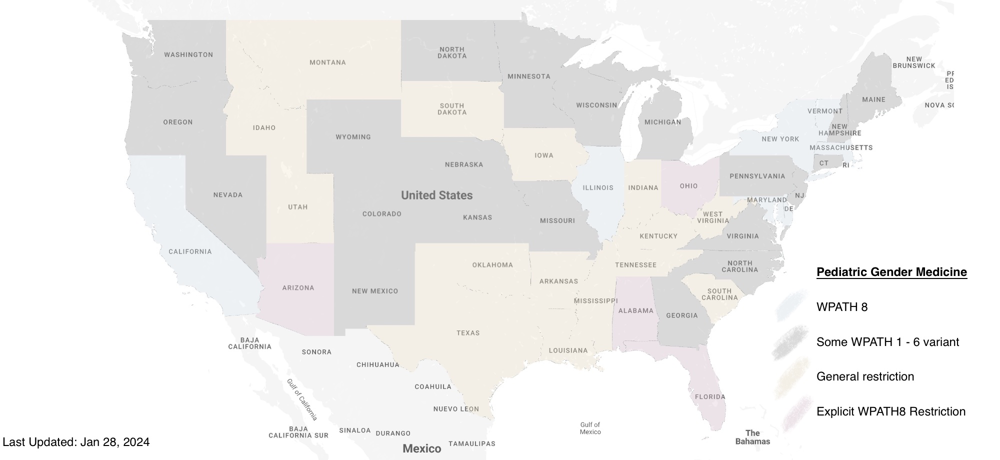

0.6.0 - ci-build
USInterstateInteroperability - Local Development build (v0.6.0) built by the FHIR (HL7® FHIR® Standard) Build Tools. See the Directory of published versions
WPATH's guidelines, once widely accepted as the benchmark for transgender healthcare, have faced increasing scrutiny and skepticism in various states. This shift has influenced local policies, leading to a mosaic of regulations that range from supportive to highly restrictive regarding access to gender-affirming treatments and surgeries for transgender individuals. In some states, lawmakers and medical bodies are questioning or moving away from WPATH's recommendations, potentially limiting the availability and scope of transgender healthcare services. These divergences reflect broader debates over medical authority, the role of government in healthcare decisions, and the evolving understanding of gender identity and transgender health needs. As a result, transgender individuals across the U.S. face a disparate and often challenging landscape when seeking healthcare, highlighting the need for a nuanced and informed approach to policy-making in this sensitive and vital area of public health.

WPATH, WPATH8, standards of care, suicide, prevention, mental health, depression, trans, transgender, youth, puberty blockers, sex change
{
"resourceType": "Consent",
"policy": [{
"authority": "https://www.myflorida.com/"
}],
"provision": {
"type": "permit",
"purpose": [{
"code": "COC",
"display": "coordination of care",
"system": "http://terminology.hl7.org/CodeSystem/v3-ActReason"
}],
"provision": [{
"type": "deny",
"class": [{
"code": "Procedure",
"display": "Procedure",
"system": "http://hl7.org/fhir/resource-types"
}],
"code": [{
"text": "Hormone replacement therapy",
"coding": [{
"code": "266717002",
"display": "Hormone replacement therapy (procedure)",
"system": " http://snomed.info/sct"
}, {
"text": "Gender affirming surgery",
"coding": [{
"code": "719670005",
"display": "Gender confirmation surgery (procedure)",
"system": " http://snomed.info/sct"
}]
}]
}]
}
}